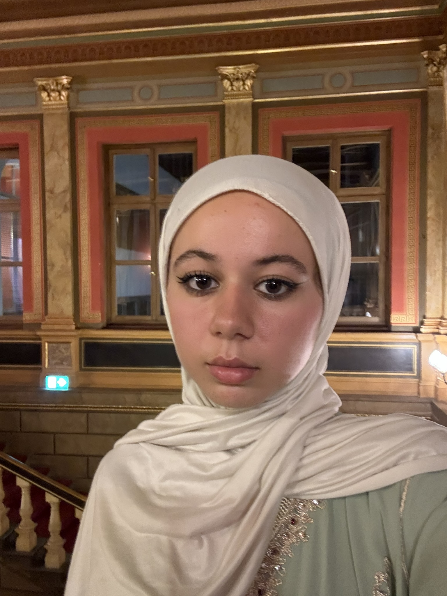

Kanban Board
Dieses Kanban Board habe ich selbst entwickelt. Ich nutze es regelmäßig um meine Aufgaben zu verwalten

Ich studiere Soziologie und Informatik und bringe mir privat Web Development bei. Mein Ziel ist es im Anschluss an das Studium in der Web- oder Anwendungsentwicklung zu arbeiten.
Ich begeistere mich für alles rund um Tech, von Web Development bis hin zu Data Science. Diese Seite wird im Laufe meines Lernprozesses noch weiter ausgebaut. Abgesehen von meinem persönlichen Portfolio gibt es noch viele andere Projekte die ich realisieren möchte.
Abgesehen von meinem Studium und meiner Karriere lese ich gerne in meiner Freizeit, kreiere Content für Social Media und treibe Sport.
Hier stelle ich meine Projekte vor, sowohl solche die ich bereits realisiert habe, als auch solche die noch in den Startlöchern stehen. Durch Anklicken gelangst du zur Anwendung.
Dieses Kanban Board habe ich selbst entwickelt. Ich nutze es regelmäßig um meine Aufgaben zu verwalten
Eine Webanwendung mit der man effektiv Sprachen lernen kann, von A1 bis C2 Level in verschiedenen Sprachen
eine Webanwendung die auf Basis bisher gelesener Bücher neue Empfehlungen generiert
Eine Webanwendung die Nachrichten aggregiert und zusammenfasst
Du erreichst mich am besten über LinkedIn oder per E-Mail.
Meine E-Mail Adresse lautet: sanae.bouyoumad@gmx.de
Der folgende link führt zu meinem LinkedIn Account: Mein LinkedIn